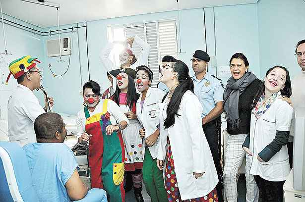
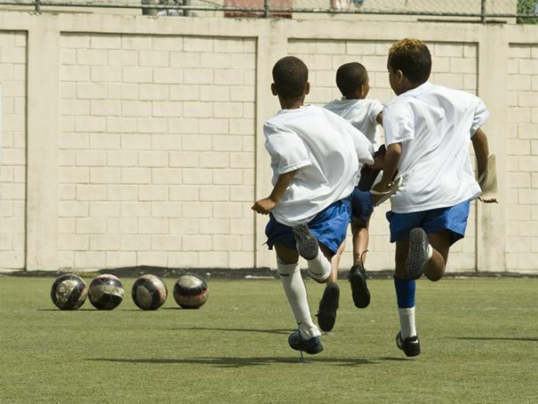

Aproveite nossa Plataforma!
Feed
Novo Evento
É com muito amor que comunicamos o mais novo evento da ONG, pata amiga A Associação Cão Viver é uma instituição particular e, assim sendo, não recebemos nenhum recurso público para cuidar de quase 200 animais. Você pode fazer a diferença na vida deles. Gostaria de ajudar a Cão Viver? Escolha a que melhor se encaixa no seu perfil e disponibilidade: Apadrinhe um peludo e doe amor;
Recentes

O projeto Musica Para Todos O Projeto Música Para Todos ao longo de seus 18 anos tem contribuído de modo efetivo na formação de milhares de crianças, jovens e adultos.
Nova Ong Cadastrada

O projeto Reforço Tem como objetivo auxiliar jovens em seus estudos.
Voluntariado
O projeto O Projeto Som+Eu foi fundado pela Associação Cultural de Amigos da Providência, a fim de promover a democratização e a ampliação da cultura. Por meio de aulas de educação musical para crianças e adolescentes, busca trazer qualidade de vida e desenvolvimento cultural e artístico para seus participantes. Atualmente, conta com duas sedes, uma no Morro da Providência, no Rio de janeiro e a outra em Campos Elíseos, em Duque de Caxias (RJ). Além das sedes, o projeto fornece aulas para algumas escolas da rede pública.
Voluntariado
O projeto O Projeto Som+Eu foi fundado pela Associação Cultural de Amigos da Providência, a fim de promover a democratização e a ampliação da cultura. .
Feedback Usuário
Marli - publicado há 2 dias.
Estou amando essa plataforma, por aqui me encontro em várias ong's e ainda consigo ajudar o próximo, estou extremamente grata
Diogo - publicado há 1 dia.
Adotei meu animal de estimação atraves da plataforma!!